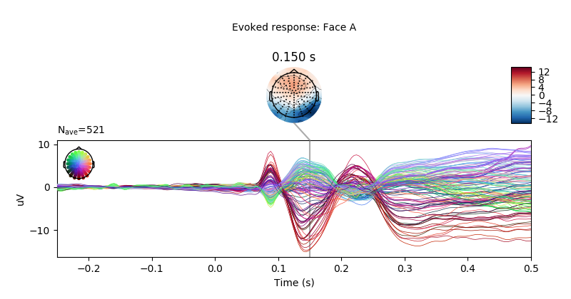
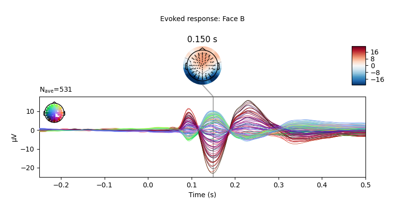

Note
Click here to download the full example code
Import single subject from LIMO data set into MNE-Python¶
Here we a define function to extract the eeg signal data from the LIMO structures in the LIMO dataset, see 1, 2, and:
The code allows to:
Fetch single subjects epochs data for the LIMO data set. Epochs information (i.e., sampling rate, number of epochs per condition, number and name of EEG channels per subject, etc.) is extracted from the LIMO .mat files stored on disk. If files are not found, the function mne.datasets.limo.load_data() will automatically download the data from a remote repository.
mne.datasets.limo.load_data() creates a custom info and
epochs structure in MNE-Python.
Missing channels can be interpolated if desired.
References¶
- 1
Guillaume, Rousselet. (2016). LIMO EEG Dataset, [dataset]. University of Edinburgh, Centre for Clinical Brain Sciences. https://doi.org/10.7488/ds/1556.
- 2
Rousselet, G. A., Gaspar, C. M., Pernet, C. R., Husk, J. S., Bennett, P. J., & Sekuler, A. B. (2010). Healthy aging delays scalp EEG sensitivity to noise in a face discrimination task. Frontiers in psychology, 1, 19. https://doi.org/10.3389/fpsyg.2010.00019
# Authors: Jose C. Garcia Alanis <alanis.jcg@gmail.com>
#
# License: BSD (3-clause)
import numpy as np
import matplotlib.pyplot as plt
import mne
from mne.datasets import limo
from mne.stats import linear_regression
print(__doc__)
# fetch data from subject 2 and interpolate missing channels
limo_epochs = limo.load_data(subject=2)
Out:
1052 matching events found
No baseline correction applied
Adding metadata with 2 columns
0 projection items activated
0 bad epochs dropped
In the original LIMO experiment, participants performed a two-alternative
forced choice task discriminating between the same two faces.
The critical manipulation in the experiment was that the phase-coherence of
the presented face-stimuli was varied across a noise-signal continuum
spanning from 0 to 100 %. In other words, faces with high phase coherence
were easily discernible, while faces with low phase-coherence were hard to
identify as such).
The events coding the presentation of each of these two faces are stored in
limo_epochs.events.
We can visualise the distribution of the face events contained in the epochs structure. Events should appear clearly grouped, as they are ordered during the import process.
fig, ax = plt.subplots(figsize=(7, 5))
mne.viz.plot_events(limo_epochs.events, event_id=limo_epochs.event_id, axes=ax)
ax.set(title="Distribution of events")
plt.legend(loc='lower left', borderaxespad=1.)
plt.tight_layout()
plt.show()
As it can be seen above, events are coded as Face/A and Face/B.
Information about the phase-coherence of the presented faces is stored in
limo_epochs.metadata, which also contains information about the presented
faces for convenience.
Check epochs metadata
print(limo_epochs.metadata.head())
Out:
face phase-coherence
0 A -1.456885
1 A -1.456885
2 A -0.108914
3 A 1.624191
4 A 0.276221
Before going on, we’ll drop the EOG channels present in the LIMO epochs
(coded with EXG-prefix in limo_epochs.info['ch_names'], as data has
already been cleaned.
limo_epochs.drop_channels(['EXG1', 'EXG2', 'EXG3', 'EXG4'])
# Furthermore, some datasets contain missing channels (stored in
# ``limo_epochs.info[‘bads’]``), which were dropped during preprocessing of the
# data. We’ll interpolate this channels for convenience.
limo_epochs.interpolate_bads(reset_bads=True)
Out:
Computing interpolation matrix from 117 sensor positions
Interpolating 11 sensors
Now we can go ahead and plot the ERPs evoked by Face A and Face B
# only show -250 to 500 ms
ts_args = dict(xlim=(-.25, 0.5))
# plot evoked response for faces A & B
limo_epochs['Face/A'].average().plot_joint(times=[.15],
title='Evoked response: Face A',
ts_args=ts_args)
limo_epochs['Face/B'].average().plot_joint(times=[.15],
title='Evoked response: Face B',
ts_args=ts_args)
- 
- 
We can also compute the difference wave contrasting Face A and Face B. Although, looking at the evoked responses above, we shouldn’t expect great differences among these face-stimuli.
Compute difference wave (Face A minus Face B)
difference_wave = mne.combine_evoked([limo_epochs['Face/A'].average(),
-limo_epochs['Face/B'].average()],
weights='equal')
# Plot difference between Face A and Face B
difference_wave.plot_joint(times=[.15], title='Difference Face A - Face B')
As expected, no see clear differential patterns appears when contrasting Face A and Face B. However, we could narrow our search to since this is a “visual paradigm” it might be best to electrodes located over the occipital lobe. After all this is “visual paradigm”. Thus, differences between stimuli (if any) might easier to spot over “more visual areas”.
Create a dictionary containing the evoked responses
conditions = ["Face/A", "Face/B"]
evoked_dict = dict()
for condition in conditions:
evoked_dict[condition] = limo_epochs[condition].average()
print(evoked_dict)
# concentrate on an occipital electrode
pick = evoked_dict["Face/A"].ch_names.index('B11')
# compare evoked responses
mne.viz.plot_compare_evokeds(evoked_dict, picks=pick)
Out:
{'Face/A': <Evoked | 'Face/A' (average, N=521), [-0.29994, 0.49991] sec, 128 ch, ~556 kB>, 'Face/B': <Evoked | 'Face/B' (average, N=531), [-0.29994, 0.49991] sec, 128 ch, ~556 kB>}
Next, we can inspect the effect of phase-coherence on the activation patterns evoked by the presented face-stimuli. Here, one would expect that faces with high phase-coherence evoke a stronger response, as participants should be better at identifying these faces.
Create design matrix for linear regression. We’ll use the information
contained in the limo_epochs.metadata.
design = limo_epochs.metadata.copy()
design = design.assign(intercept=1) # add intercept
design['face a - face b'] = np.where(design['face'] == 'A', 1, -1)
names = ['intercept', 'face a - face b', 'phase-coherence']
# fit linear model
reg = linear_regression(limo_epochs, design[names], names=names)
Out:
Fitting linear model to epochs, (25728 targets, 3 regressors)
Done
Visualise effect of phase-coherence.
Here we can see a clear effect of phase-coherence, with higher phase-coherence (i.e., better “face visibility”) being associated with stronger activity patterns.
Conversely, there appears to be no (or very small) systematic effects when constraining Face A and Face B. This is largely consistent with the difference wave approach presented above.
Visualise effect of face condition (Face A vs. Face B).
Total running time of the script: ( 0 minutes 8.034 seconds)
Estimated memory usage: 630 MB